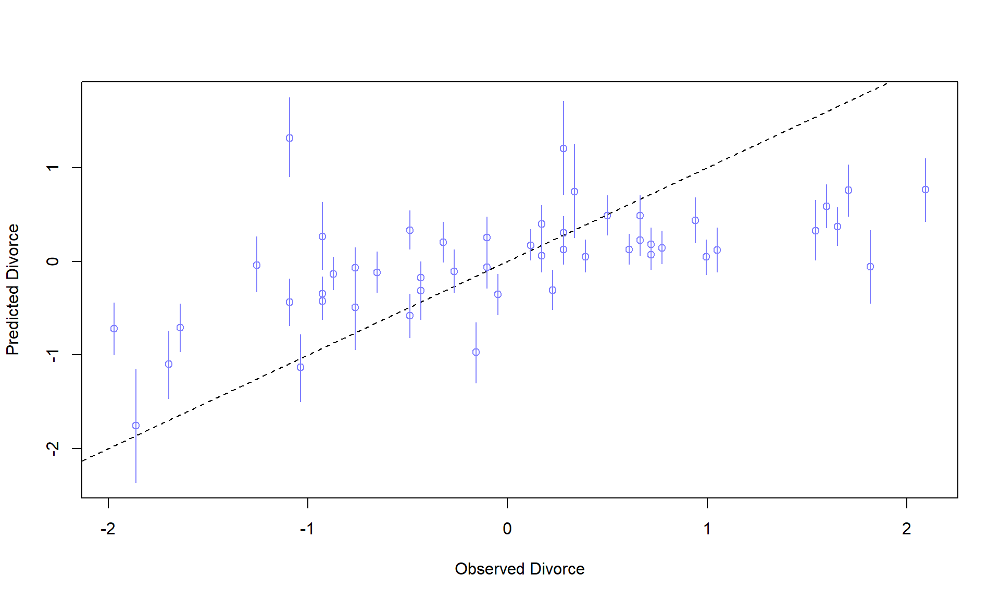
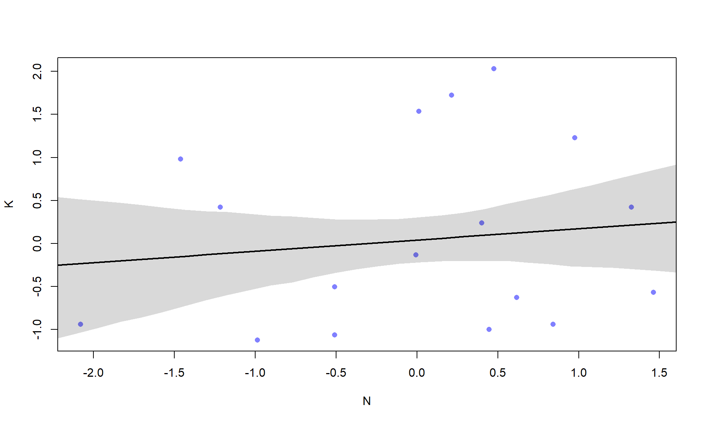
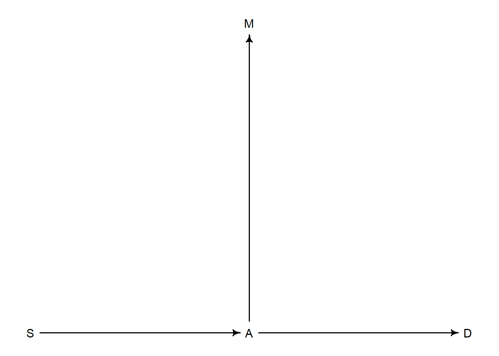

Code
library(rethinking)
library(dagitty)library(rethinking)
library(dagitty)Data for marriages and divorce rate. Let’s plot the priors for mu
data(WaffleDivorce)
d <- WaffleDivorce
d$D <- standardize(d$Divorce)
d$M <- standardize(d$Marriage)
d$A <- standardize(d$MedianAgeMarriage)
m5.1 <- quap(alist(
D ~ dnorm(mu, sigma),
mu <- a + bA * A,
a ~ dnorm(0,0.2),
bA ~ dnorm(0,0.5),
sigma ~ dexp(1)
), data=d)
set.seed(10)
prior <- extract.prior(m5.1)
# Only need two points since we only need two points to draw a line
mu <- link(m5.1, post=prior, data=list(A=c(-2,2)))
plot(NULL, xlim=c(-2,2), ylim=c(-2,2))
for (i in 1:50) lines(c(-2,2), mu[i,], col=col.alpha('black', 0.4))Now the posterior:
A_seq <- seq(-3,3.2, length.out=30)
mu <- link(m5.1, data=list(A=A_seq))
mu.mean <- apply(mu, 2, mean)
mu.PI <- apply(mu, 2, PI)
plot(D ~ A, data=d, col=rangi2, pch=16)
lines(A_seq, mu.mean, lwd=2)
shade(mu.PI, A_seq)
Let’s fit the model with marriage as the covariate and look at the coefficients:
m5.2 <- quap(alist(
D ~ dnorm(mu, sigma),
mu <- a + bM * M,
a ~ dnorm(0,0.2),
bM ~ dnorm(0,0.5),
sigma ~ dexp(1)
), data=d)
precis(m5.1) mean sd 5.5% 94.5%
a -8.837084e-07 0.09737997 -0.1556329 0.1556311
bA -5.683900e-01 0.11000163 -0.7441939 -0.3925862
sigma 7.883385e-01 0.07801450 0.6636562 0.9130207precis(m5.2) mean sd 5.5% 94.5%
a 2.918047e-07 0.10824642 -0.1729984 0.1729990
bM 3.500540e-01 0.12592744 0.1487977 0.5513104
sigma 9.102653e-01 0.08986239 0.7666479 1.0538828We see that the magnitude for the coefficient for marriage is lower than that for age, but is an incorrect way to compare models. Or variable importance.
dag5.1 <- dagitty('dag{A -> D; A -> M; M -> D}')
coordinates(dag5.1) <- list(x=c(A=0, D=1, M=2), y=c(A=0, D=1, M=0))
drawdag(dag5.1)
Model m5.1 will capture the total effects of “A->D” and “A->M->D”, where the second is a mediated effect. Model m5.2 captures the total effect of “M->D” and “M->A->D”, where the second is the back door path.
But, we could also have the DAG there is no direct effect from “M” to “D”. In that case, the entire effect observed from the backdoor path: “A->M->D”.
dag5.1 <- dagitty('dag{A -> D; A -> M}')
coordinates(dag5.1) <- list(x=c(A=0, D=1, M=2), y=c(A=0, D=1, M=0))
drawdag(dag5.1)
So which is the correct DAG? We can use conditional independence.
In the second DAG everything is still associated, but if we condition on A, then there is no backdoor pathway from M to D. That is, \(M \mathrel{\unicode{x2AEB}} D | A\).
The dagitty package can help deduce these associations:
DMA_dag2 <- dagitty('dag{D <- A -> M}')
impliedConditionalIndependencies(DMA_dag2)D _||_ M | AIf we use multiple regression, the coefficients are effect estimates of the given variable on the response, given the other variables in the equation.
m5.3 <- quap(alist(
D ~ dnorm(mu, sigma),
mu <- a + bM * M + bA * A,
a ~ dnorm(0,0.2),
bM ~ dnorm(0,0.5),
bA ~ dnorm(0,0.5),
sigma ~ dexp(1)
), data=d)
precis(m5.3) mean sd 5.5% 94.5%
a -2.828642e-05 0.09707123 -0.1551669 0.1551103
bM -6.553086e-02 0.15076312 -0.3064794 0.1754177
bA -6.136370e-01 0.15097351 -0.8549218 -0.3723521
sigma 7.850672e-01 0.07783076 0.6606786 0.9094558plot(coeftab(m5.1, m5.2, m5.3), par=c('bA', 'bM'))
Notice, \(\beta_A\) does not move, it just becomes more uncertain. On the other hand, \(\beta_M\) is now overlapping zero. This tests and shows that \(M \mathrel{\unicode{x2AEB}} D | A\) is indeed true for the given data generating process. Perhaps DAG 2 is more inline with out DGP. This implies that DAG 1 is out, and marriage has no direct effect on divorce rate.
To help understand the model better, we are going to build 3 types of plots: 1. Residual 2. Posterior Prediction 3. Counterfactual
For a simple residual plot example, let’s look at Age regressed onto Marriage. If we plot this against the Divorce rate, what we see is the relationship between Divorce rate and marriage, when have already accounted for Age.
m5.4 <- quap(alist(
M ~ dnorm(mu, sigma),
mu <- a + bAM * A,
a ~ dnorm(0,0.2),
bAM ~ dnorm(0,0.5),
sigma ~ dexp(1)
), data=d)
mu <- link(m5.4)
mu_mean <- colMeans(mu)
mu_resid <- d$M - mu_mean
plot(mu_resid, d$D, pch=16, col=rangi2, main='Residual Plot with Divorce Rate',
xlab='Marriage Rate Resid.', ylab='Divorce Rate')Let’s do some posterior predictive checks for model m5.3:
mu <- link(m5.3)
mu_mean <- colMeans(mu)
mu_PI <- apply(mu, 2, PI)
D_sim <- sim(m5.3, n=1e4)
D_PI <- apply(D_sim, 2, PI)
plot(mu_mean ~ d$D, col=rangi2, ylim=range(mu_PI), xlab='Observed Divorce', ylab='Predicted Divorce')
abline(a=0, b=1, lty=2)
for(i in 1:nrow(d)) lines(rep(d$D[i], 2), mu_PI[,i], col=rangi2)
Alright, counterfactual time. Basically, if wiggle one part of the DAG, how does it change everything else. For this, we need to build a complete model of our first DAG (where M->D is present). This will allow use to manipulate A and in turn influence M.
d <- list()
d$D <- standardize(WaffleDivorce$Divorce)
d$M <- standardize(WaffleDivorce$Marriage)
d$A <- standardize(WaffleDivorce$MedianAgeMarriage)
m5.3_A <- quap(alist(
## A -> D <- M
D ~ dnorm(mu, sigma),
mu <- a + bM * M + bA * A,
a ~ dnorm(0,0.2),
bM ~ dnorm(0,0.5),
bA ~ dnorm(0,0.5),
sigma ~ dexp(1),
## A -> M
M ~ dnorm(mu_M, sigma_M),
mu_M <- aM + bAM*A,
aM ~ dnorm(0,0.2),
bAM ~ dnorm(0,0.5),
sigma_M ~ dexp(1)
), data=d)
precis(m5.3_A) mean sd 5.5% 94.5%
a -2.192238e-06 0.09707342 -0.1551443 0.1551399
bM -6.524040e-02 0.15076987 -0.3061998 0.1757190
bA -6.134339e-01 0.15097997 -0.8547290 -0.3721387
sigma 7.850904e-01 0.07783661 0.6606924 0.9094883
aM -3.647809e-05 0.08685053 -0.1388404 0.1387674
bAM -6.947411e-01 0.09573042 -0.8477368 -0.5417454
sigma_M 6.817629e-01 0.06758648 0.5737467 0.7897792Let’s manipulate A and see how it propagates through the model. What we see below is the effect of A->D and A->M->D:
A_seq <- seq(-2,2,length.out=30)
# `vars` let's us simulate different variables in the model. M is simulated first
# Then D is simulated
s <- sim(m5.3_A, data=list(A=A_seq), vars=c('M', 'D'))
plot(A_seq, colMeans(s$D), ylim=c(-2,2), type='l', xlab='Manipulated A',
ylab='Counterfactual D')
shade(apply(s$D, 2, PI), A_seq)
mtext('Total Counterfactual effect of A on D')
We can also see what we would expect D to be for specific values of A:
# Use the mean and sd of WaffleDivorce$MedianAgeMarriage
sim2_dat <- data.frame(A=(c(20,30) - 26.1)/1.24)
s2 <- sim(m5.3_A, data=sim2_dat, vars=c('M', 'D'))
c('Mean'= mean(s2$D[,2] - s2$D[,1]), 'sd'=sd(s2$D[,2] - s2$D[,1])) Mean sd
-4.543342 1.418763 Now, if we simulate from M, we break the causal link from A->M. So, let’s set A=0 (average state) and simulate different values of M:
sim_dat <- data.frame(M=seq(-2,2,length.out=30), A=0)
s <- sim(m5.3_A, data=sim_dat, vars='D')
plot(sim_dat$M, colMeans(s), ylim=c(-2,2), type='l', xlab='Manipulated M',
ylab='Counterfactual D')
shade(apply(s, 2, PI), A_seq)
mtext('Total Counterfactual effect of M on D')
Note that in vars we don’t write A. This because M doesn’t influence A.
Just for fun, let’s simulate the counterfactuals without the help of sim:
A_seq <- seq(-2,2,length.out=30)
post <- extract.samples(m5.3_A)
#simulate M values
M_sim <- with(post, {
vapply(1:30, \(x) rnorm(1e3, aM + bAM*A_seq[x], sigma_M), numeric(1e3))
})
# simluate D values, using M above
D_sim <- with(post, {
vapply(1:30, \(x) rnorm(1e3, a + bA*A_seq[x] + bM*M_sim[,x], sigma), numeric(1e3))
})Here we will consider how different variables effect primate milk energy content.
data(milk)
d <- milk
d$K <- standardize(d$kcal.per.g)
d$N <- standardize(d$neocortex.perc)
d$M <- standardize(log(d$mass))
# Remove missing values
dcc <- d[complete.cases(d$K, d$N, d$M), ]The model we will start with is:
\[\begin{align} K_i &\sim \text{Normal}(\mu_i, \sigma)\\ \mu &= \alpha + \beta_N N_i \\ \end{align}\]
where \(K\) is the kilocaolories and \(N\) is the neocortext percent.
m5.5 <- quap(alist(
K ~ dnorm(mu, sigma),
mu <- a + bN*N,
a ~ dnorm(0, 0.2),
bN ~ dnorm(0, 0.5),
sigma ~ dexp(1)
), data=dcc)
precis(m5.5) mean sd 5.5% 94.5%
a 0.03995181 0.1544909 -0.2069545 0.2868581
bN 0.13323344 0.2237475 -0.2243583 0.4908252
sigma 0.99982378 0.1647095 0.7365861 1.2630614Let’s show a quick plot:
xseq <- seq(min(dcc$N)-0.15, max(dcc$N)+0.15, length.out=30)
mu <- link(m5.5, data=list(N=xseq))
plot(K ~ N, data=dcc, col=rangi2, pch=16)
lines(xseq, colMeans(mu), lwd=2)
shade(mu |> apply(2,PI,), xseq)
Let’s build a model just using log body mass, and a complete model:
m5.6 <- quap(alist(
K ~ dnorm(mu, sigma),
mu <- a + bM*M,
a ~ dnorm(0, 0.2),
bM ~ dnorm(0, 0.5),
sigma ~ dexp(1)
), data=dcc)
m5.7 <- quap(alist(
K ~ dnorm(mu, sigma),
mu <- a + bM*M + bN*N,
a ~ dnorm(0, 0.2),
bM ~ dnorm(0, 0.5),
bN ~ dnorm(0,0.5),
sigma ~ dexp(1)
), data=dcc)
precis(m5.7) mean sd 5.5% 94.5%
a 0.06799181 0.1339987 -0.1461639 0.2821475
bM -0.70299118 0.2207869 -1.0558513 -0.3501310
bN 0.67511787 0.2482985 0.2782889 1.0719469
sigma 0.73801399 0.1324617 0.5263146 0.9497134plot(coeftab(m5.5, m5.6, m5.7), pars=c('bM', 'bN'))Notice that in the full model, both \(\beta_N\) and \(\beta_M\) move away from zero. Betting there is some colinearity between the covariates.
cor(dcc[,c('K', 'N', 'M')]) K N M
K 1.0000000 0.1554576 -0.3542636
N 0.1554576 1.0000000 0.7503758
M -0.3542636 0.7503758 1.0000000This is a good thing, including both in the regression. Because we are able to control for effects due to body size, we can see how much stronger neocortex percentage is associated with milk energy content.
This relationship is known as masking. It occurs when one covariate is positvely correlated with the outcome and another is negatively correlated, but both covariates are positively correlated with each other. Hence, they tend to cancel each other out. But we can tease out their individual effects by including both in the model.
We are going to assume that there is a confounding variable that effects both M and N. Thus “wiggling” M or N does not need to take the other into account. Let’s plot the counterfactual for wiggling M and keeping N at the mean
xseq <- seq(min(dcc$M)-0.15, max(dcc$M)+0.15, length.out=30)
mu <- link(m5.7, data=list(M=xseq, N=0))
plot(K ~ M, data=dcc, col=rangi2, pch=16)
lines(xseq, colMeans(mu), lwd=2)
shade(mu |> apply(2,PI,), xseq)A simple DAG for this process might be the following:
dag5.7 <- dagitty('dag{M -> K <- N; M -> N}')
coordinates(dag5.7) <- list(x=c(M=0,K=1,N=2), y=c(M=0.5, K=1, N=0.5))
drawdag(dag5.7)Some code to simulate this relationship might be:
n <- 100
M <- rnorm(n)
N <- rnorm(n, M)
K <- rnorm(n, M - N)If we look at the relationship between K & M, and K & N, we might see no observable trend. But if we look at them together, we see that they both have a large influence on K.
We can also use the dagitty package to find all markov equivalent (DAGs with the same set of conditional independences) DAGs. This is another reason why we can’t test this DAG easily.
MElist <- equivalentDAGs(dag5.7)
drawdag(MElist)
Let’s go back to the height data from chapter 4. We are going to build a model, but only for predicting height from sex. To do this, we could use a simple indicator variable, but let’s try by coding female as 1 and male as 2. In quap, we can actually assign priors using these index variables:
data(Howell1)
d <- Howell1
d$sex <- d$male + 1
m5.8 <- quap(alist(
height ~ dnorm(mu, sigma),
mu <- a[sex],
a[sex] ~ dnorm(178, 20),
sigma ~ dunif(0,50)
), data=d)
precis(m5.8, depth=2) mean sd 5.5% 94.5%
a[1] 134.91009 1.6069201 132.3419 137.47826
a[2] 142.57785 1.6974588 139.8650 145.29072
sigma 27.30974 0.8280253 25.9864 28.63308We can look at the difference between male and female, also called a contrast, from the following:
post <- extract.samples(m5.8)
post$diff <- post$a[,1] - post$a[,2]
precis(post, depth=2) mean sd 5.5% 94.5% histogram
sigma 27.312074 0.8297513 26.00370 28.626840 ▁▁▁▁▃▇▇▇▃▂▁▁▁
a[1] 134.905169 1.6131654 132.35783 137.466870 ▁▁▁▁▂▅▇▇▅▂▁▁▁▁
a[2] 142.592847 1.7048118 139.85331 145.281824 ▁▁▁▁▂▃▇▇▇▃▂▁▁▁▁
diff -7.687678 2.3206108 -11.39892 -4.048557 ▁▁▁▁▃▇▇▃▁▁▁Let’s go back to our milk example, but this time build a model around species:
data(milk)
d <- milk
d$K <- standardize(d$kcal.per.g)
d$clade_id <- d$clade |> as.integer()
m5.9 <- quap(alist(
K ~ dnorm(mu, sigma),
mu <- a[clade_id],
a[clade_id] ~ dnorm(0,0.5),
sigma ~ dexp(1)
), data=d)
labels <- paste0('a[', 1:4, 'l:', levels(d$clade))
plot(precis(m5.9, depth=2, pars='a'), labels=labels, xlab='expected kcal(std)')“Animal diversity (\(A\)) is linearly related to latitude (\(L\)), but only after controlling for plant diversity (\(P\))”:
A ~ P + L
“Neither funding (\(F\)) or size of laboratory (\(S\)) is by itself a good predictor of time to PhD (\(T\)), but together these variables are positively associated with time to degree.”
Model: T ~ F + L
This is a different scenario than what we found ourselves with earlier in the chatper. Earlier the covar with positively associated with each other, but one was positively associated with the outcome and the other was negatively. In this case, for us to have a zero effect on their own, we need to have the covar be negatively associated with each other.
Models (1), (3), (4), and (5) are equivalent. (2) is going to have some issues when fitting and lm will yell at you.
Assume that the DAG in the divorce example is:
dag_h1 <- dagitty('dag{M -> A -> D}')
coordinates(dag_h1) <- list(x=c(M=0,A=1,D=2), y=c(M=0, A=0, D=0))
drawdag(dag_h1)I’m also going to cheat a bit a use daggity to get the conditional independencies:
impliedConditionalIndependencies(dag_h1)D _||_ M | AThis is not consistent with the data because we saw that both \(\beta_A\) and \(\beta_M\) in the multiple regression model increased in magnitude when compared to their univariate counterpart. If the DAG above was true, we would see that the coefficient for \(\beta_M\) drops to nearly zero.
Let’s indeed assume that the DAG above is the true data generating process. The model to fit and produce counterfactuals is below. Notice that we don’t include \(M\) in the model for \(D\). This is because we don’t want to double dip. That would imply that \(M\) could talk to \(D\) through some backdoor path in the presence of \(A\), but this is not that case with the DAG we have assumed to be true. If this DAG really is the true DGP, then including \(M\) in the regression for \(D\) will just be adding unnecessary noise to the model.
Another note - this is the final model. We only create this model with the necessary structure when we have finished sorting out different hypotheses.
d <- list()
d$D <- standardize(WaffleDivorce$Divorce)
d$M <- standardize(WaffleDivorce$Marriage)
d$A <- standardize(WaffleDivorce$MedianAgeMarriage)
m_h2 <- quap(alist(
## A -> D
D ~ dnorm(mu, sigma),
mu <- a + bA * A,
a ~ dnorm(0,0.2),
bA ~ dnorm(0,0.5),
sigma ~ dexp(1),
## M -> A
A ~ dnorm(mu_A, sigma_A),
mu_A <- aA + bAM*M,
aA ~ dnorm(0,0.2),
bAM ~ dnorm(0,0.5),
sigma_A ~ dexp(1)
), data=d)
precis(m_h2) mean sd 5.5% 94.5%
a -3.184019e-09 0.09737878 -0.1556301 0.1556301
bA -5.684034e-01 0.10999982 -0.7442043 -0.3926024
sigma 7.883258e-01 0.07801136 0.6636486 0.9130030
aA 7.213300e-09 0.08684788 -0.1387997 0.1387997
bAM -6.947376e-01 0.09572699 -0.8477278 -0.5417474
sigma_A 6.817373e-01 0.06758016 0.5737312 0.7897434Let’s go ahead and compute the couterfactual for \(M\)’s effect of \(D\):
M_seq <- seq(-4,2,length.out=100)
sim_dat <- data.frame(M=M_seq)
s <- sim(m_h2, data=sim_dat, vars=c('A', 'D'))
par(mfrow=c(1,2))
plot(D ~ M, data=d, col=rangi2, pch=16, ylim=range(s$D), xlim=range(M_seq),
main='Counterfactual of M on D')
lines(M_seq, colMeans(s$D), lwd=2)
shade(s$D |> apply(2,PI,0.89), M_seq)
plot(M ~ A, data=d, col=rangi2, pch=16, ylim=range(s$A), xlim=range(M_seq),
main='Counterfactual of M on A')
lines(M_seq, colMeans(s$A), lwd=2)
shade(s$A |> apply(2,PI,0.89), M_seq)Because I didn’t read the problem, I am just going to keep the above. The actual problem is to get the counterfactual estimate for halving the divorce. We need to do this on the original data and then apply the same transformation with the original mean and sd so it is transformed back to the same space.
M_new <- WaffleDivorce$Marriage * 0.5
M_new <- (M_new - mean(WaffleDivorce$Marriage))/sd(WaffleDivorce$Marriage)
sim_dat <- data.frame(M=M_new)
s <- sim(m_h2, data=sim_dat, vars=c('A', 'D'))
par(mfrow=c(2,2))
plot(d$M, M_new, pch=16, xlab='Old M', ylab='New M')
abline(a=0, b=1, lwd=2, lty=2)
bars <- s$D |> apply(2,PI,0.89)
plot(d$D,colMeans(s$D), col=rangi2, pch=16, xlab='Old D', ylab='New D',
main='Effect of Halving Marriage Rate', ylim=range(bars))
abline(a=0, b=1, lwd=2, lty=2)
for (i in 1:ncol(bars)) lines(rep(d$D[i],2), bars[,i], col=rangi2)
bars <- s$A |> apply(2,PI,0.89)
plot(d$A, colMeans(s$A), col=rangi2, pch=16, xlab='Old A', ylab='New A', ylim=range(bars))
abline(a=0, b=1, lwd=2, lty=2)
for (i in 1:ncol(bars)) lines(rep(d$A[i],2), bars[,i], col=rangi2)
bars <- s$D |> apply(2,PI,0.89)
plot(M_new, colMeans(s$D), pch=16, col=rangi2, xlab='New M', ylab='New D', ylim=range(bars))
for (i in 1:ncol(bars)) lines(rep(M_new[i],2), bars[,i], col=rangi2)range(M_new) |> diff()[1] 2.264406range(d$M) |> diff()[1] 4.528812Let’s go back to the milk example and assume that the true DAG is as follows:
dagh3 <- dagitty('dag{M -> K <- N; M -> N}')
coordinates(dag5.7) <- list(x=c(M=0,K=1,N=2), y=c(M=0.5, K=1, N=0.5))
drawdag(dag5.7)
Let’s compute the counterfactual effect on \(K\) of doubling \(M\):
data(milk)
d <- milk
d$K <- standardize(d$kcal.per.g)
d$N <- standardize(d$neocortex.perc)
d$M <- standardize(log(d$mass))
# Remove missing values
dcc <- d[complete.cases(d$K, d$N, d$M), ]
m_h3 <- quap(alist(
# M -> K <- N
K ~ dnorm(mu, sigma),
mu <- a + bM*M + bN*N,
a ~ dnorm(0, 0.2),
bM ~ dnorm(0, 0.5),
bN ~ dnorm(0,0.5),
sigma ~ dexp(1),
# M -> N
N ~ dnorm(mu_N, sigma_N),
mu_N <- a_N + bMN * M,
a_N ~ dnorm(0,0.2),
bMN ~ dnorm(0, 0.5),
sigma_N ~ dexp(1)
), data=dcc)Now, let’s look at the effects of doubling \(M\). This one is a bit tricky. Are we talking about doubling the mass? Or doubling the log of mass? I am going to assume we are talking about doubling mass as that is easier to reason about.
M_new <- (dcc$mass * 2) |> log()
M_new <- (M_new - mean(log(dcc$mass)))/ sd(log(dcc$mass))
s <- sim(m_h3, data=list(M=M_new), vars=c('N', 'K'))
par(mfrow=c(2,2))
plot(dcc$M, M_new, pch=16, col=rangi2, xlab='M old', ylab='M new')
abline(a=0,b=1,lwd=2,lty=2)
bars <- s$K |> apply(2,PI,0.89)
plot(dcc$K, colMeans(s$K), pch=16, col=rangi2, ylim=range(bars), xlab='Old K', ylab='New K',
main='Counterfactual Effect of Doubling M on K')
for (i in 1:ncol(bars)) lines(rep(dcc$K[i], 2), bars[,i], col=rangi2)
abline(a=0,b=1,lty=2,lwd=2)
plot(M_new, colMeans(s$K), pch=16, col=rangi2, xlab='New M', ylab='New K', ylim=range(bars))
for(i in 1:ncol(s$K)) lines(rep(M_new[i], 2), bars[,i], col=rangi2)
Let’s show the full counterfactual spectrum just for fun:
M_seq <- seq(-2,2,length.out=100)
s <- sim(m_h3, data=list(M=M_seq), vars=c('N', 'K'))
par(mfrow=c(1,2))
plot(K ~ M, pch=16, col=rangi2, data=dcc, main='Counterfactual of M on K')
lines(M_seq, colMeans(s$K), lwd=2)
shade(s$K |> apply(2,PI,0.89), M_seq)
plot(N ~ M, pch=16, col=rangi2, data=dcc, main='Counterfactual of M on N')
lines(M_seq, colMeans(s$N), lwd=2)
shade(s$N |> apply(2,PI,0.89), M_seq)Let’s bring the South variable into the mix here. I am going to assume the following DAG:
dag_h4 <- dagitty('dag{S -> A; A -> M; A -> D}')
coordinates(dag_h4) <- list(x=c(S=0, A=1, M=1, D=2), y=c(S=1, A=1, M=0, D=1))
drawdag(dag_h4)
This is inline with our previously discovered independence (section 5.1), where \(M \mathrel{\unicode{x2AEB}} D | A\).
Let’s use dagitty to get our conditional independences.
impliedConditionalIndependencies(dag_h4)D _||_ M | A
D _||_ S | A
M _||_ S | AWe are going to evaluate \(M \mathrel{\unicode{x2AEB}} S | A\) first. We will have a model where \(S\) predicts \(M\) without \(A\), and one where both covar are included.
d <- list()
d$D <- standardize(WaffleDivorce$Divorce)
d$M <- standardize(WaffleDivorce$Marriage)
d$A <- standardize(WaffleDivorce$MedianAgeMarriage)
d$S <- WaffleDivorce$South
m_h4_1 <- quap(alist(
## S -> M
M ~ dnorm(mu, sigma),
mu <- a + bS * S,
a ~ dnorm(0,0.2),
bS ~ dnorm(0,0.5),
sigma ~ dexp(1)
), data=d)
m_h4_2 <- quap(alist(
## S -> A -> M
M ~ dnorm(mu, sigma),
mu <- a + bS * S + bA * A,
a ~ dnorm(0,0.2),
bS ~ dnorm(0,0.5),
bA ~ dnorm(0,0.5),
sigma ~ dexp(1)
), data=d)
plot(coeftab(m_h4_1, m_h4_2), par=c('bS'))Hard to tell here, looks like \(S\) has little to no effect on \(M\). Let’s evaluate \(D \mathrel{\unicode{x2AEB}} S | A\):
m_h4_3 <- quap(alist(
## S -> D
D ~ dnorm(mu, sigma),
mu <- a + bS * S,
a ~ dnorm(0,0.2),
bS ~ dnorm(0,0.5),
sigma ~ dexp(1)
), data=d)
m_h4_4 <- quap(alist(
## S -> A -> D
D ~ dnorm(mu, sigma),
mu <- a + bS * S + bA * A,
a ~ dnorm(0,0.2),
bS ~ dnorm(0,0.5),
bA ~ dnorm(0,0.5),
sigma ~ dexp(1)
), data=d)
plot(coeftab(m_h4_3, m_h4_4), par=c('bS'))It definitely looks like adding \(A\) removes some of the effect of \(S\) on \(D\). I would go as far as to say that the conditional independence has been shown.